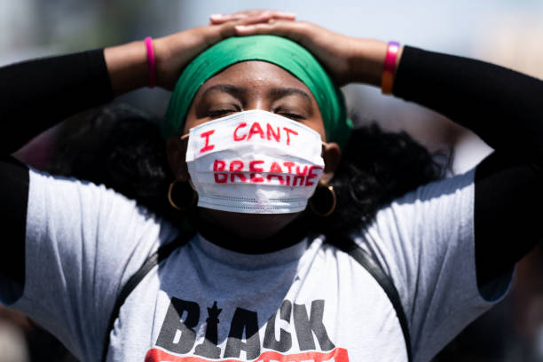

Black Lives Matter (BLM) is a decentralized political and social movement
protesting against incidents of police brutality and all racially motivated
violence against black people. While there are specific organizations such as
the Black Lives Matter Global Network that label themselves simply as "Black
Lives Matter", the Black Lives Matter movement comprises a broad array of
people and organizations. The slogan "Black Lives Matter" itself remains
untrademarked by any group. The broader movement and its related organizations
typically advocate against police violence toward black people as well as for
various other policy changes considered to be related to black liberation.
In July 2013, the movement began with the use of the hashtag #BlackLivesMatter
on social media after the acquittal of George Zimmerman in the shooting death
of African-American teen Trayvon Martin 17 months earlier in February 2012. The
movement became nationally recognized for street demonstrations following
the 2014 deaths of two African Americans, that of Michael Brown—resulting in
protests and unrest in Ferguson, Missouri, a city near St. Louis—and Eric Garner
in New York City. Since the Ferguson protests, participants in the movement have
demonstrated against the deaths of numerous other African Americans by police actions
or while in police custody. In the summer of 2015, Black Lives Matter activists became
involved in the 2016 United States presidential election. The originators of the hashtag
and call to action, Alicia Garza, Patrisse Cullors, and Opal Tometi, expanded their project
o a national network of over 30 local chapters between 2014 and 2016. The overall Black Lives
Matter movement is a decentralized network of activists with no formal hierarchy.
The movement returned to national headlines and gained further international attention during
the global George Floyd protests in 2020 following the murder of George Floyd by Minneapolis
police officer Derek Chauvin. An estimated 15 million to 26 million people participated in the
2020 Black Lives Matter protests in the United States, making it one of the largest movements
in the country's history. The movement comprises many views and a broad array of demands but
they center on criminal justice reform.

Black lifes matter is a pan-african organization, that aims to help africans
all over the world survive and fight against racism and white supremecy.
We are expansive
We are a collective of africans who
in pan-africanism. We also believe that
in order to win and bring as many people
with us along the way, we must move beyond
the narrow nationalism that is all too prevalent
in african communities. We must ensure we are
building a movement that brings all of us to the front.
Our aim
for a world where africans are back in
african and europeans back in europ, the
goal is for a world where black people rule great kingdoms again.
We affirm our humanity, our contributions to this society, and our
resilience in the face of deadly oppression.
The call for Black lives to matter is a rallying
cry for ALL Black lives striving for liberation.
We affirm african lives
We affirm the lives of african people all over the world .
Our movement is one of liberation and
it is one that recognizes the threat
that is racism and white supremecy.